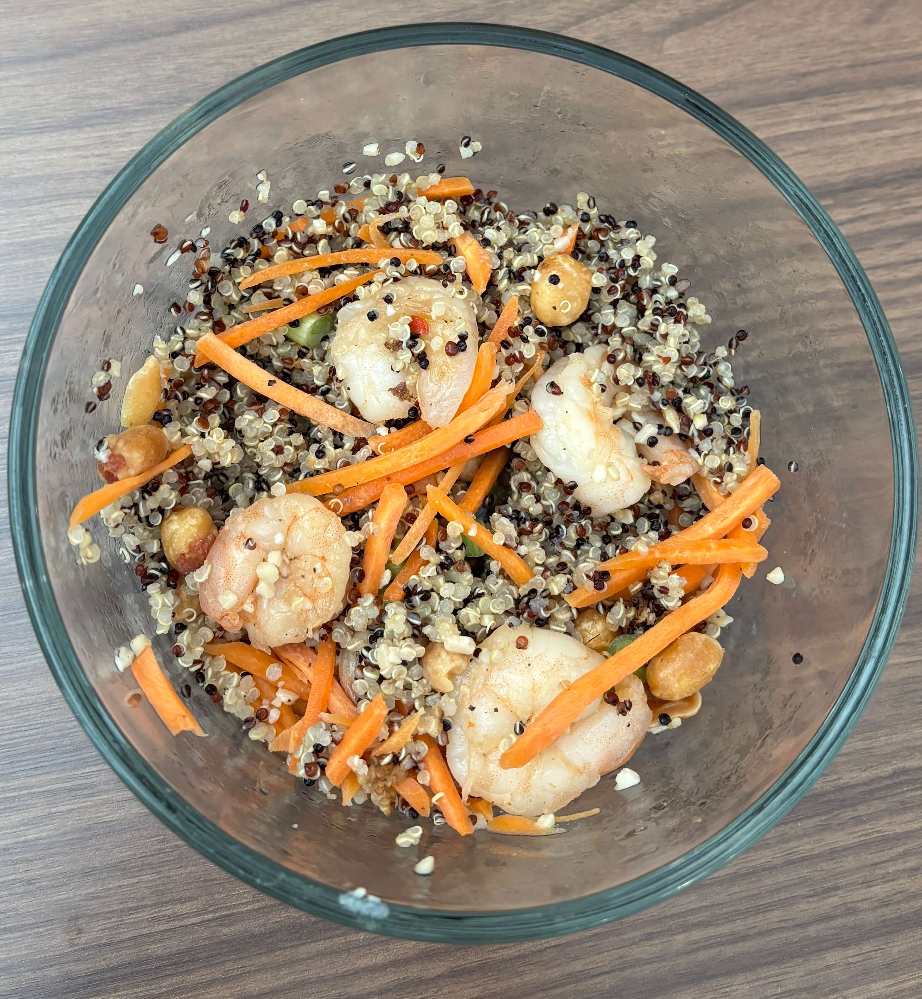

Home
Honey Garlic Shrimp

3-4 servings
Prep time:5 min, cook time:5 min
Ingredients
- 3 tablespoons honey
- 3 tablespoons low-sodium soy sauce
- 3 cloves garlic, minced
- ¼ teaspoon red pepper flakes (optional, adjust for heat)
- 2 teaspoons extra-virgin olive oil
- 1 lb. shrimp extra large (26-30 size, thawed if frozen)
- Salt and black pepper
- Cooked grain (optional)
- Toppings (optional):Sliced green onions, chopped fresh parsley or cilantro, chopped peanuts, red pepper flakes or sriracha, etc.
Steps
- Make the sauce. Whisk the honey, soy sauce, garlic and red pepper flakes, if using, in a small bowl until well combined.
- Heat oil in a large skillet over medium-high heat.
- Lightly season the shrimp with salt and pepper. (Go easy because the soy sauce has plenty of sodium.) Add the shrimp to the skillet and cook on one side for about 2 minutes.
- Flip the shrimp over and cook on the other side for 1 minute.
- Add the sauce to the pan and toss to coat with the shrimp. Cook until the shrimp are cooked through and the sauce is warm, 1 minute more
- Serve immediately with desired toppings and over steamed rice, if desired.